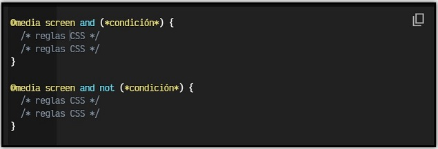

MEDIA QUERY
Una vez nos adentramos en el mundo del Responsive Design, nos damos cuenta en que hay situaciones en las que determinados aspectos o componentes visuales deben aparecer en un tipo de dispositivos, o deben existir ciertas diferencias.
Por ejemplo, una zona donde se encuentra el buscador de la página puede estar colocada en un sitio concreto en la versión de escritorio, pero en móvil quizás nos interesa que ocupe otra zona (o que tenga otro tamaño o forma) para aprovechar mejor el poco espacio que tenemos en la versión móvil de la página.
Para ello, utilizaremos un concepto denominado media queries, con los que podemos hacer esas excepciones para que sólo se apliquen a un tipo de diseño concreto.
¿Qué son las media queries?
Las reglas media queries (también denominadas MQ a veces) son un tipo de reglas de CSS que permiten crear un bloque de código que sólo se procesará en los dispositivos que cumplan los criterios especificados como condición:

Con este método, especificamos que queremos aplicar los estilos CSS para tipos de medios concretos (screen: sólo en pantallas, en este caso) que cumplan las condiciones especificadas entre paréntesis. De esta forma, una estrategia aconsejable es crear reglas CSS generales (como hemos hecho hasta ahora) aplicadas a todo el documento: colores, tipo de fuente, etc. y luego, las particularidades que se aplicarían sólo en el dispositivo en cuestión.
Aunque suele ser menos habitual, también se pueden indicar reglas @media negadas mediante la palabra clave not, que aplicará CSS siempre y cuando no se cumpla una determinada condición. Tambien pueden separarse por comas varias condiciones de media queries.
Idea: Al igual que
not, también existe una palabra claveonlyque, suele usarse a modo de hack. El comportamiento por defecto ya incluye los dispositivos que encajan con la condición, pero con la palabra claveonlyconseguimos que navegadores antiguos que no la entienden, no procesen la información, dejándola sólo para navegadores modernos.
Existen los siguientes tipos de medios:
| Tipo de medio | Significado |
|---|---|
| screen | Monitores o pantallas de ordenador. Es el más común. |
| Documentos de medios impresos o pantallas de previsualización de impresión. | |
| speech | Lectores de texto para invidentes (Antes aural, el cuál ya está obsoleto). |
| all | Todos los dispositivos o medios. El que se utiliza por defecto. |
Otros tipos de medios como braille, embossed, handheld, projection, tty o tv aún son válidos, pero están marcados como obsoletos a favor de utilizar tipos de medios de la lista anterior y restringir sus características posteriormente.
Recordemos que con el siguiente fragmento de código HTML estamos indicando que el nuevo ancho de la pantalla es el ancho del dispositivo, por lo que el aspecto del viewport se va a adaptar consecuentemente:
<meta name="viewport" content="initial-scale=1, width=device-width">Con esto conseguiremos preparar nuestra web para dispositivos móviles y prepararnos para la introducción de reglas media query en el documento CSS.
Ejemplos de media queries
Veamos un ejemplo clásico de media queries en el que definimos diferentes estilos dependiendo del dispositivo que estamos utilizando. Observese que en el código existen 3 bloques @media donde se definen estilos CSS para cada uno de esos tipos de dispositivos.
El código sería el siguiente:
@media screen and (max-width: 640px) {
.menu {
background: blue;
}
}
@media screen and (min-width: 640px) and (max-width: 1280px) {
.menu {
background: red;
}
}
@media screen and (min-width: 1280px) {
.menu {
background: green;
}
}El ejemplo anterior muestra un elemento (con clase menu) con un color de fondo concreto, dependiendo del tipo de medio con el que se visualice la página:
- Azul para resoluciones menores a 640 píxeles de ancho (móviles).
- Rojo para resoluciones entre 640 píxeles y 1280 píxeles de ancho (tablets).
- Verde para resoluciones mayores a 1280 píxeles (desktop).
El número de bloques de reglas @media que se utilicen depende del desarrollador web, ya que no es obligatorio utilizar un número concreto. Se pueden utilizar desde un sólo media query, hasta múltiples de ellos a lo largo de todo el documento CSS.
Hay que tener en cuenta que los media queries también es posible indicarlos desde HTML, utilizando la etiqueta <link>:
<link rel="stylesheet" href="mobile.css"
media="screen and (max-width: 640px)">
<link rel="stylesheet" href="tablet.css"
media="screen and (min-width: 640px) and (max-width: 1280px)">
<link rel="stylesheet" href="desktop.css"
media="screen and (min-width: 1280px)">Estos estilos quedarán separados en varios archivos diferentes. Ten en cuenta que todos serán descargados al cargar la página, sólo que no serán aplicados al documento hasta que cumplan los requisitos indicados en el atributo media.
Tipos de características
En los ejemplos anteriores solo hemos utilizado max-width y min-width como tipos de características a utilizar en condiciones de media query. Sin embargo, tenemos una lista de tipos de características que podemos utilizar:
| Tipo de característica | Valores | ¿Cuándo se aplica? |
|---|---|---|
width |
Si el dispositivo tiene el tamaño indicado exactamente. | |
min-width |
Si el dispositivo tiene un tamaño de ancho mayor al indicado. | |
max-width |
Si el dispositivo tiene un tamaño de ancho menor al indicado. | |
aspect-ratio |
aspect-ratio | Si el dispositivo encaja con la proporción de aspecto indicada. |
orientation |
landscape | portrait | Si el dispositivo está colocado en modo vertical o apaisado. |
Existen otras características minoritarias que en algunos casos límite pueden ser interesantes, como por ejemplo scan, resolution, monochrome, grid, color-index, color, etc...